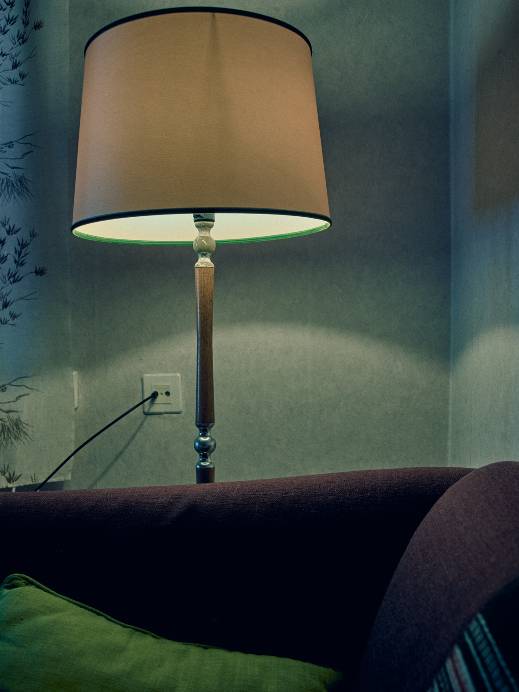

Interior Light / Sisätilan valo
When choosing a place to live, the way natural light enters a home is essential to me. Artificial lighting can be very pretty, but nothing beats natural light and the shadows it casts. Throughout the seasons, they bring a quiet movement and life to the walls that is truly interesting to observe.
Tulevaisuudessa asuinpaikkaani miettiessä minulle on tärkeää, miten valo osuu talon sisälle. Keinotekoinen valaistus voi olla hyvinkin sievää, mutta mikään ei voita ulkoa tulevaa valoa ja sen seinille heittämiä varjoja. Eri vuodenaikoina ne tuovat sellaista hiljaista liikehdintää ja eloa seinille, mikä on todella mielenkiintoista seurattavaa.

Interior Light / Sisätilan valo
Oulu, Finland 2026

Living Room at Karjasilta / Olohuone Karjasillalla
Oulu, Finland 2025